Yin Yang Cross
I am responsible for the overall system design, overall level mechanism design and prototype function implementation of the game
Introduction
Inspiration:
Game Jam with the theme "Intersection".
Game Description：
This is a 3D platform puzzle game. The core gameplay of the game is built around the principle that Yin and Yang are compatible with the opposite attributes and repulsive with the same attributes. Players can interact with different Yin and Yang objects in the scene by switching their own Yin and Yang attributes to engage in certain puzzles and battles.
Demo Video
I. Theme and background settings
Theme Settings
Yin Yang Intersection
Background Settings：
The player is in a world where for unknown reasons, the yin and yang elements of the entire world are disordered, causing disharmony between yin and yang. As the world's elements regulator, players need to go to the location where the elements of yin and yang are disordered to bring yin and yang back into harmony.
II. Basic settings of the level
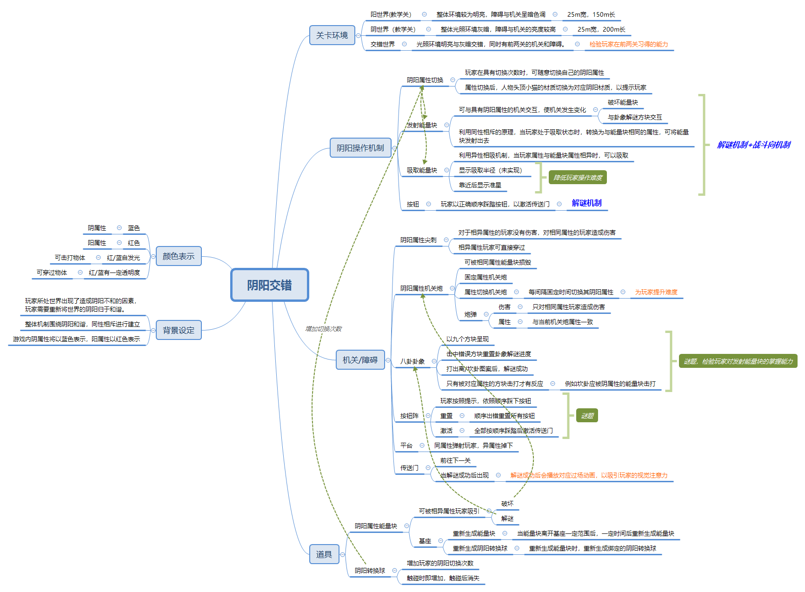{kind=link}
Color Indication：
The game uses blue and red colors to represent objects with yin and yang attributes respectively. he objects with glowing materials are attack-able objects. Objects whose materials have a certain degree of transparency are objects that can be passed through. The gray brick material and the white glowing material indicate neutral (Yin and Yang harmony) objects.
Operation mechanism
- Movement：Common walking, running, jumping mechanism in 3D games.
- Switching Yin and Yang Attributes：When the number of times a player switches between yin and yang is greater than 0, the player can press the corresponding button to switch the yin and yang attributes that the character has. The yin and yang attributes provide visual cues to the player in the color of the material of the cat on top of the head.
- Magnet：The principle of opposites attract is utilized.The player can press the corresponding button to pull energy blocks that are different from the character's Yin Yang attributes in a certain range.If the attributes are the same, it cannot be attracted.The energy block will follow the player when the player is in the attracting (i.e. holding) state. When the player is in the attracting state, press the same button to put down the energy block.
- 发射：利用了磁铁同性相斥的原理。当玩家保持吸取状态时，进行阴阳属性切换,即可将能量块朝视野中心的面向方向发射出去。
- 踩踏：利用了玩家的跳跃和按钮自身的机制。当玩家触及按钮的碰撞体时，按钮进行实时的按压模拟。
关卡内的障碍及道具
机关/障碍：
-
阴阳属性尖刺：
- a. 对于相异属性的角色没有伤害，对相同属性的玩家造成伤害。
- b. 相异属性的玩家角色可直接穿过。
-
阴阳属性机关炮
- a. 被相同属性的能量块击毁。
- b. 固定属性机关炮——其属性保持固定不变。
- c. 属性切换机关炮——其属性在关卡内每隔固定时间进行切换。
- d. 炮弹——只对同属性玩家造成伤害，炮弹属性与将其发射出的机关炮当前属性一致。
- 平台：对于同属性的玩家，向上弹射，对于属性相异的玩家取消碰撞，玩家可直接穿过平台下落。
- 传送门：作为前往下一关的机关。关卡最后的解谜挑战成功后出现。
阴属性尖刺
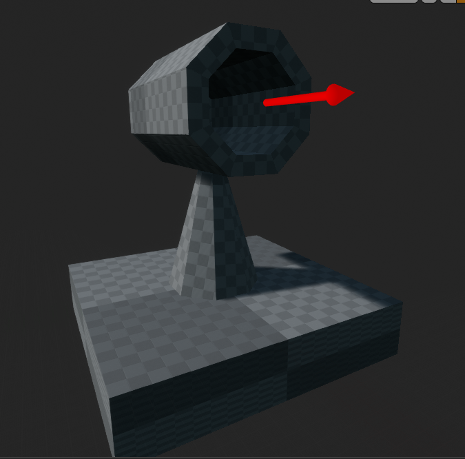
加农炮
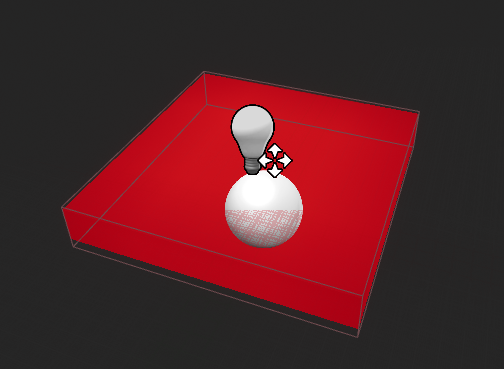
阳属性平台
解谜机关：
-
八卦卦象：
- a. 九宫格方块的方式呈现。
- b. 玩家需要按照卦象，通过发射能量块的方式，将九宫格激活为对应卦象的图案（离/坎卦）。
- c. 击中错误的方块后，卦象解谜进度重置。
- d. 与对应阴阳属性的能量块接触后才可激活。例如坎卦的九宫格方块应与阴属性的能量块进行接触。
- e. 解谜成功后生成传送门。
-
按钮阵
- a. 玩家按照提示，依照顺序踩下按钮。
- b. 重置：玩家没有依照顺序踩下按钮时，进度重置。
- c. 激活：全部依照顺序踩下后，生成传送门。
卦象机关
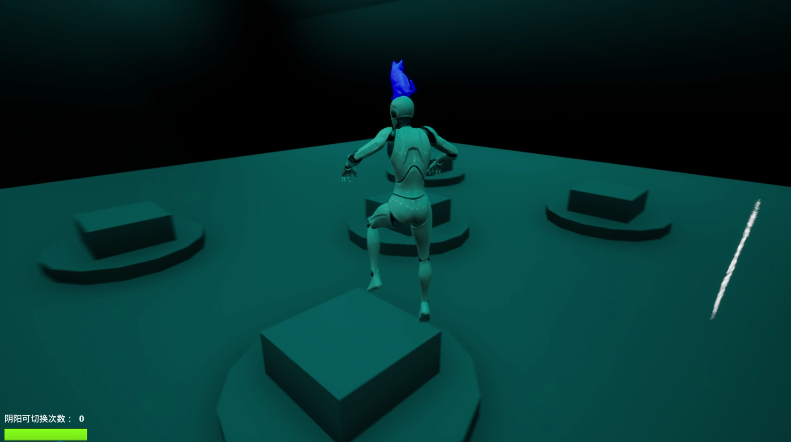
按钮机关
道具：
-
阴阳属性能量块：
- a. 可被相异属性的玩家角色吸引。
- b. 可用于破坏机关炮或解谜。
- c. 具有基座：当能量块离开基座范围后，一定时间后重新生成能量块与绑定的阴阳转换球。
-
阴阳属性转换球
- a. 增加玩家的阴阳切换次数。玩家触碰球体的碰撞体积即可增加次数。
- b. 被触碰后消失。
阳属性能量块
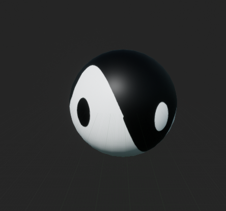
阴阳属性转换球
关卡类型
三个线性流程的关卡。 第一关以阴属性为主体，穿插小部分阳属性元素。光照环境偏暗，光色偏冷。 第二关以阳属性为主体，穿插小部分阴属性元素。光照环境偏明，光色偏暖。 第三关阴阳交错，阴阳属性元素交错放置。 如下依次为关卡1-3的图例及平面布置图：
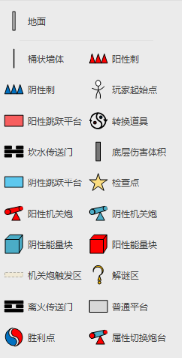 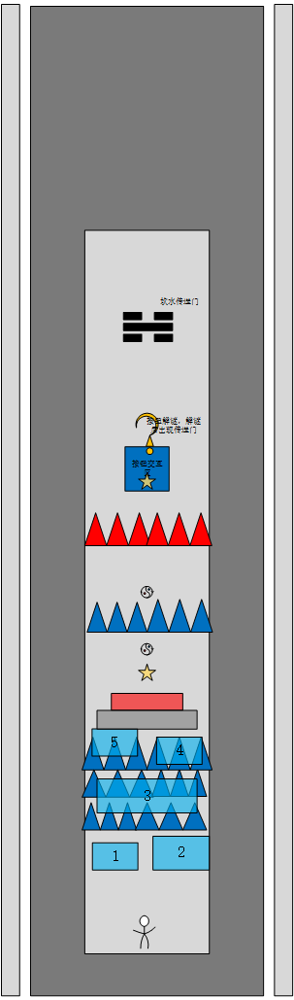 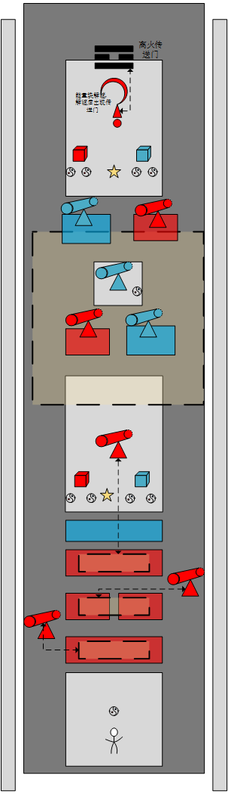 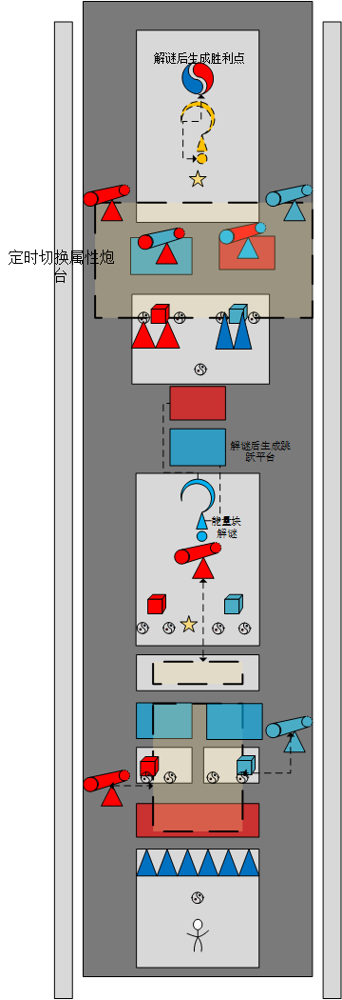{kind=link}
{kind=link}
{kind=link}
{kind=link}
关卡规则
第一关（阴属性为主）
- 玩家需要学会使用阴阳切换能力，并穿过尖刺，按照关卡1平面图中标有数字的平台的布置顺序，依次按下按钮阵的按钮，以生成传送门进入下一关。
- 接触同属性的尖刺会死亡。
- 接触同属性的平台被弹射，接触异属性的平台直接穿过平台下落。
- 掉落平台接触底部的伤害体积会死亡。
- 死亡后重生于最后一次接触的检查点。
第二关（阳属性为主）
- 玩家结合第一关学会的阴阳切换能力，在此关卡学会使用吸取和发射能量块的能力。
- 玩家进入机关炮对应的触发区域/体积，激活机关炮，机关炮对玩家进行跟随射击。机关炮每1.5秒发射一次。
- 玩家依照卦象提示，利用阳属性能量块，打出离火卦即可生成传送门进入下一关。
- 接触同属性的平台被弹射，接触异属性的平台直接穿过平台下落。
- 掉落平台接触底部的伤害体积会死亡。
- 死亡后重生于最后一次接触的检查点。
第三关（阴阳交错）
- 玩家结合前两关学会的能力，依照卦象提示，进行两次解谜，以生成传送门获得胜利。
- 加入了属性切换炮台，以提升关卡难度，炮台每3秒进行一次切换。
- 玩家进入机关炮对应的触发区域/体积，激活机关炮，机关炮对玩家进行跟随射击。机关炮每1.5秒发射一次。
- 接触同属性的平台被弹射，接触异属性的平台直接穿过平台下落。
- 掉落平台接触底部的伤害体积会死亡。
- 死亡后重生于最后一次接触的检查点。
- 最后一处解谜，按下按钮，进行检测。若卦象都被打出，则生成传送门。反之，重置解谜进度。
三、设计思路
关卡机制以及摆放主要围绕阴阳调和，同性相斥的想法进行构筑。初期我首先想到的是光影的交错，由光和影进一步联想到了阴和阳。与光影相比，阴阳具有更丰富的内容与元素，可用于构建丰富的机制。因此，我在设计demo的过程中，以阴阳交错作为主题，进行了关卡和机制的设计。
因为水、火是大多玩家常见的元素，比较容易接受和理解，于是选取了水和火两个阴阳卦象，作为前两关的元素。
阳：离火；阴：坎水
- 每一局游戏有回合数/时长限制，在限制回合数/时长内，两位玩家没有都到达迷宫中心处，则游戏失败。
- 游戏开始时，4枚非语言徽章的图片将会被随机分配。
- 每回合开始后，玩家A向玩家B发送一枚非语言徽章，玩家B收到信号后做出操作，玩家A根据玩家B所在半边实时地图发送反馈徽章信号，玩家A结束回合。之后玩家B重复玩家A的操作
- 玩家点击徽章发送信号后，对应图片将会出现在另一位玩家的屏幕中心。玩家可通过此方式给予对方玩家反馈或指令需求。
期待在三关的体验流程中，玩家的兴趣曲线能如下图所示，有所波动但整体逐渐升高。
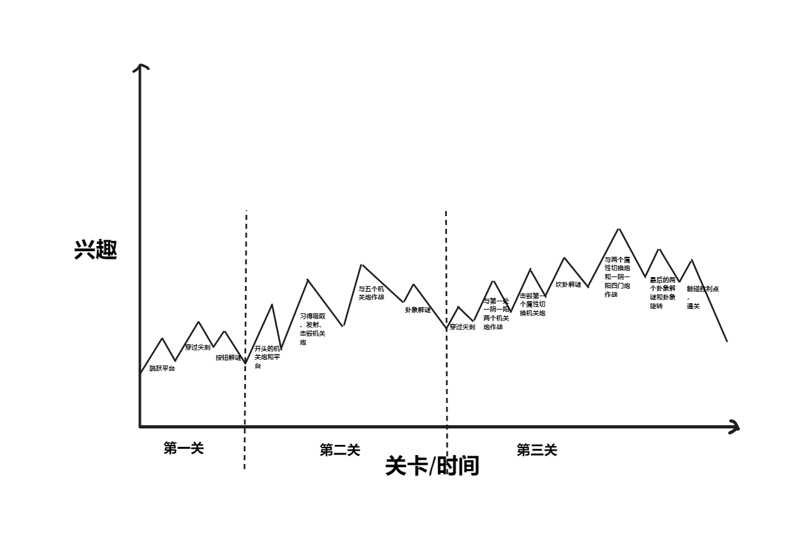{kind=link}
第一关
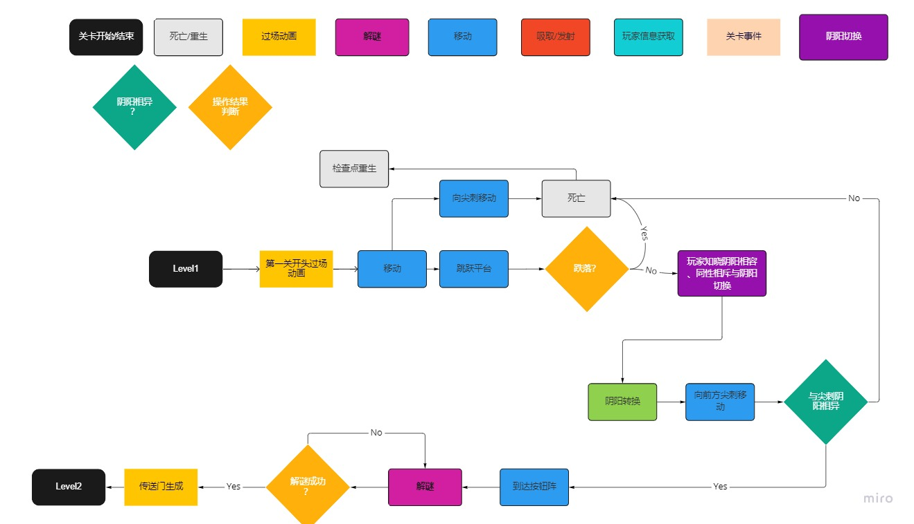{kind=link}
关卡设计目的：
让玩家学会使用阴阳切换的能力，同时对阴阳相容、同性相斥的关卡机制有基本认知。并且为玩家提供较低的门槛，让玩家更易上手，进入关卡流程。
-
思路：
- 为了给玩家较低的门槛，在此关，仅引入了简单的平台跳跃机制和阴阳切换机制。解谜也只需玩家简单记忆自己跳跃平台的顺序。
- 为了让玩家对阴阳相容/相斥机制进行初步理解，在关卡1平面图中，标有数字5的阴性平台附近的中性平台后面，放置了红色的阳性平台。玩家此时处于阴性状态，径直走向红色平台会直接落下。刚刚在高台上看到了“阴阳相容”提示的玩家，此时可能会有茫然的感觉，并试图将刚刚的提示与落下的体验关联。此处为玩家对阴阳相容的理解做了初步铺垫。
- 为了让玩家产生切换阴阳状态的动机，且进一步理解阴阳相容/相斥的机制，设计了阴阳属性的尖刺，并引入第一关。在玩家从红色平台落下后，可直接看到前方的阴阳转换球与文字提示。 若玩家此时忽略提示与转换道具，径直走向尖刺，角色将直接死亡。为了通过尖刺，玩家便会产生使用阴阳切换机制的动机。在使用阴阳切换机制通过属性相异的尖刺后，玩家将会对阴阳相容、同性相斥的机制产生进一步的理解。从而掌握阴阳切换的能力。
- 第一关的解谜挑战主要用于调节玩家的兴趣曲线，较为简单。在高台处，有文字提示玩家回头注意自己的跳台路径。在解谜处的文字提示使玩家将解谜与之前的路径提示关联起来，从而完成解谜。 较为简单的解谜挑战，也容易使玩家在初期获得成就感，进入正向反馈循环，从而有动机探索接下来的游戏内容。
- 为了给玩家明确的视觉提示，在解谜成功后，播放对准传送门的特写过场动画。
第二关
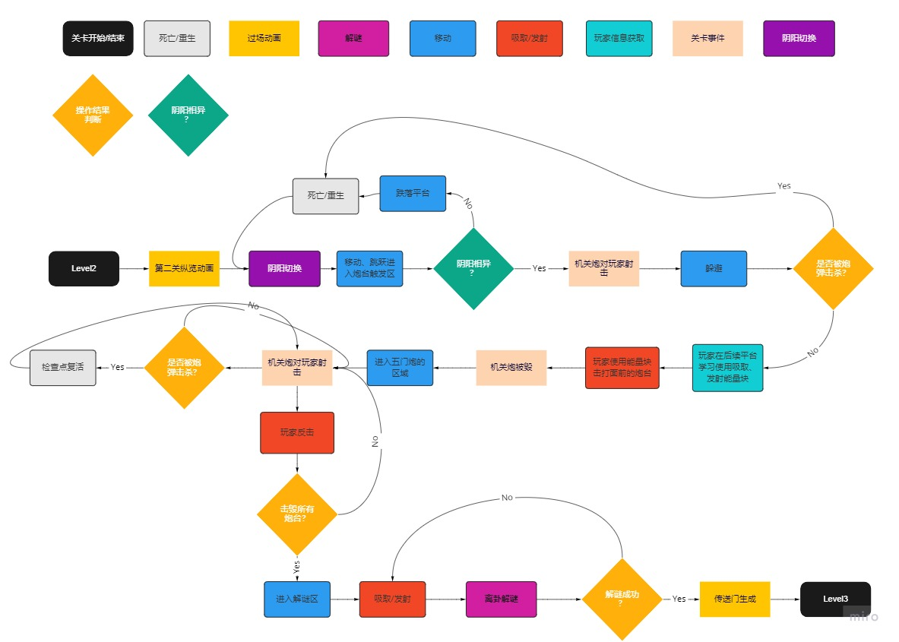{kind=link}
关卡设计目的：
丰富机制内容，并引入战斗向关卡机制，提升游戏难度，为玩家带来惊喜感、挑战感以及成就感。引入吸取、发射能量块的机制，并让玩家在关卡2的流程中掌握。
-
思路:
- 为了丰富机制内容，并引入战斗向关卡机制。此处联想到了游戏《Control》中的吸取、释放物体的机制，并进行了一定参考。为了符合阴阳相容，同性相斥的整体设定，将能量块设定为同样具有阴阳属性的对象，且只有与玩家属性相异时可以吸取，与玩家属性相同时向外发射（发射这一点参考了磁铁的同极相斥）。
- 为了逐渐提升难度，避免过早给玩家挫败感。将起始处的炮台触发区域分为了三个独立区域，每次玩家进入一个区域只触发一个炮台，躲避难度较小，不容易死亡。在玩家习得击毁炮台的机制后，触发区变成了整体，玩家进入五炮台触发区后，五个炮台会一齐向玩家射击（发射有间隔时间，给玩家操作空间）。如此，完成了阶梯式的难度上升。
- 为了符合阴阳相容、同性相斥的设定，并且让玩家更深刻地理解围绕这一设定的机制，炮台发出的炮弹也具有阴阳属性。属性相异时不对玩家造成伤害，属性相同时对玩家造成伤害。
- 为了让玩家通过试错来理解能量块同性相斥的机制，在提示击毁炮台处，放置了阴阳两种能量块，玩家通过拾取不同的能量块向炮台发射，便能理解能量方块的同性相斥机制。
- 为了给玩家带来惊喜感，并且更好地利用吸取、发射机制。此处将最后的解谜设计与八卦阴阳卦象关联起来，设置了由九个方块组成的九宫格。并在附近放置卦象和文字提示，供玩家参考。当玩家打出卦象后，解谜成功。玩家 发现能量块还能用于解谜后，会获得一定的惊喜感，并习得卦象解谜机制。
- 为了提示玩家，卦象方块可打击，将方块的材质设定为和炮台、能量块一样的发光材质。
第三关
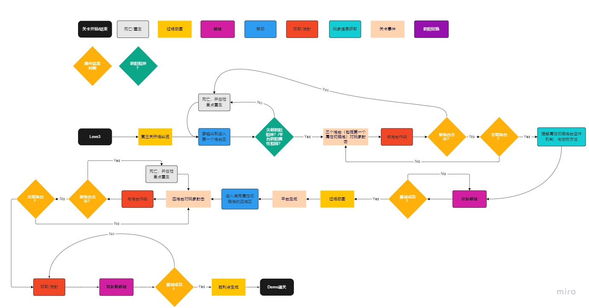{kind=link}
关卡设计目的：
参考任天堂设计关卡“起承转合”的思路，第三关主要起到“转”和“合”的作用。为检验玩家对前两关的掌握的能力的挑战。为了让玩家保持在良好的“心流”中，引入改动较小的新机制，一定程度上提升游戏难度。
-
思路:
- 为了在原有基础上给玩家提高小部分游戏难度，保持在“心流”通道，引入属性转换炮台。玩家已在第二关中理解和掌握了炮台的机制与击败方法，因此在第三关通过炮台属性转换的方法，在原有基础上略微提高了作战的难度，玩家需要进行一定的思考，但是能较容易地掌握新机制。
- 为了给玩家更佳的挑战感、惊喜感、成就感，这一关参考“合”的概念，将前两关的机关障碍都放置在了关卡中，并且更紧密，提高了一定的难度。同时为了符合“阴阳交错”的主题,这一关的不同阴阳属性的机关/障碍的交错放置频率更高，且环境光照也做了相应的交错布置。
- 为了给最后的解谜铺垫，给玩家提示，在关卡中间设置了一个阴属性的卦象解谜。此处也考察了玩家的观察能力和思考能力，远处有一个坎水的卦象提示，若玩家能观察到，结合上一关的坎卦提示，能够知晓，当前需要打出坎卦象。
- 为了符合阴阳重新归于和谐的结尾，最后的解谜参考了八卦中“离”代表南方，“坎”代表北方的概念，设定了按下按钮，两个卦象移动至对应方位的机制。第三关的胜利点传送门也参考了这一概念，在阴阳图的上方和下方分别放置了水和火的粒子特效。
- 关卡内的文字提示，一定程度上参考了与八卦相关的古文内容。
进行过设想但未实现的机制:
- 吸取范围特效:当玩家按下吸取键时，以玩家角色为中心生成一个半圆形的磁吸特效，以提示玩家可吸取范围。
- 定时翻转平台：平台具有两面，一面阴一面阳，每隔固定时间进行翻转。与玩家角色属性一致时，给予玩家伤害。用于提高关卡难度，以尝试将玩家稳固在心流体验中。
- 能量块链路：将阴阳能量块，按照一定路径，进行交错摆放，以传导能量，若不是阴-阳-阴-阳的摆放方式，能量将无法传导。路径开端有能量发射器（具有阴阳属性），末尾有能量接收器。当能量接收器接收到能量后，打开对应的门或生成平台，以让玩家通过。此机制用于丰富玩家的关卡体验。
- 当玩家处于吸取状态时，镜头偏移，方便玩家进行瞄准。
后续可能设计方向:
引入八卦中的其它卦象，并结合天、地、水、火、雷、风、山、泽进行相应的机制设计。以丰富玩家体验内容，并提升关卡策略深度，以带给玩家惊喜感、挑战感和成就感。
{kind=link}
{kind=link}